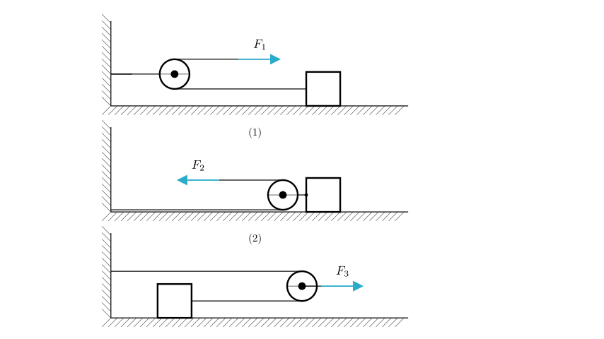
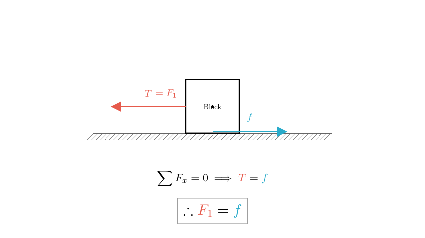
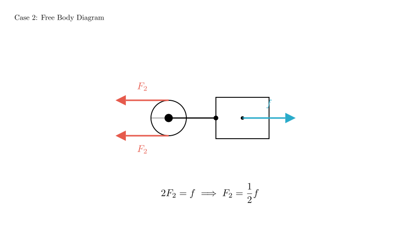
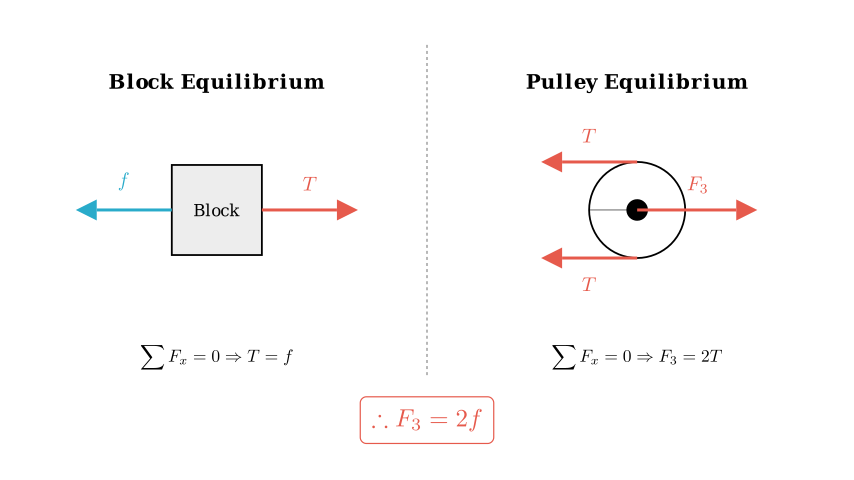

Problem Statement: As shown in the figure, use three methods to pull the same object on the same horizontal ground for uniform linear motion. The pulling forces are $F_1$, $F_2$, and $F_3$ respectively. Then: A. $F_1 > F_2 > F_3$ B. $F_1 < F_2 < F_3$ C. $F_2 > F_1 > F_3$ D. $F_2 < F_1 < F_3$
Solution Approach: Since the object moves in uniform linear motion in all three cases, the net force on the object (and the pulley systems) must be zero according to Newton's First Law.
We assume the friction force $f$ experienced by the block is the same in all cases because the object and the ground remain identical. We will analyze the relationship between the pulling force ($F$) and the friction ($f$) for each scenario using Free Body Diagrams (FBDs).

Case 1: Fixed Pulley
In the first setup, the pulley is attached to the wall. This is a fixed pulley. A fixed pulley changes the direction of the force but does not change its magnitude.
Therefore: $$T = F_1$$ $$T = f \implies F_1 = f$$

Case 2: Movable Pulley (Force applied to rope)
In the second setup, the pulley is attached to the block and moves with it. The rope is anchored to the wall, goes around the pulley, and is pulled by force $F_2$.
For the block to move uniformly, the total forward force ($2T$) must balance the friction $f$: $$2F_2 = f$$ $$F_2 = \frac{1}{2}f$$

Case 3: Movable Pulley (Force applied to axle)
In the third setup, the force $F_3$ is applied directly to the axle of the movable pulley. The rope connects the wall to the block, passing over the pulley.
Substituting $T = f$ into the pulley equation: $$F_3 = 2T$$ $$F_3 = 2f$$

Conclusion and Comparison
We have derived the magnitude of each pulling force in terms of the friction $f$:
Comparing these values: $$0.5f < f < 2f$$ Therefore: $$F_2 < F_1 < F_3$$
Verification: - $F_2$ uses a movable pulley to gain mechanical advantage (force is halved). - $F_3$ applies effort to the axle, which is a mechanical disadvantage (force is doubled to gain speed/distance). - $F_1$ is a direct 1:1 transfer.
The correct option is D.